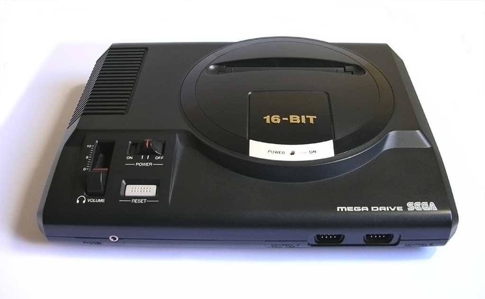
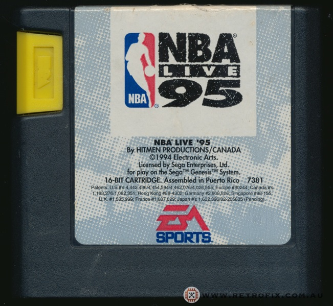

Objeto de deseo
En la búsqueda de un regalo de cumpleaños para mi hermano y casi sin querer, me encontré a la venta en una tienda un juego antiguo para la videoconsola SEGA Mega Drive, que me provocó sentimientos de nostalgia. Es lo que tiene la retroinformática.

El juego en cuestión es el NBA Live 95 y como sabía que siempre fue objeto de su deseo no pude dejar pasar la ocasión.

He de decir que acerté plenamente ya que la cara de satisfacción de mi hermano así lo denotaba.